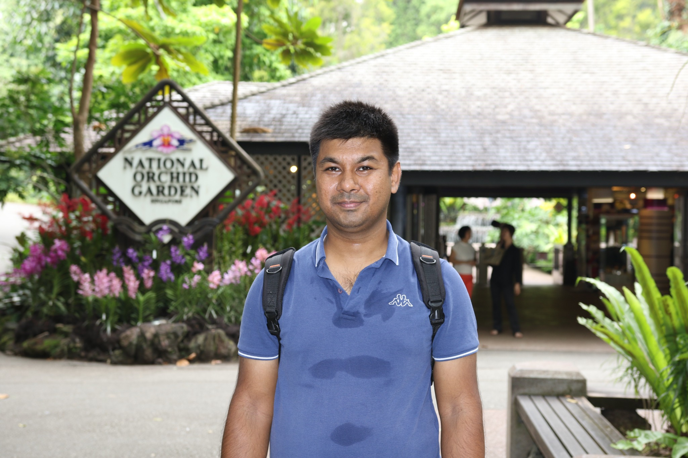

Embedded software
Embedded C/C++, Python, ARM assembly, debugging, performance optimisation, modular firmware design.
HELLO, I'M
Senior Embedded Software Engineer
Hardware & Firmware Integration
I build reliable systems where electronics and software meet — from low-level firmware and real-time control to Embedded Linux, board bring-up and product validation.

I am a hands-on embedded engineer with more than two decades of experience turning demanding system requirements into working products.
My work spans semiconductor equipment, industrial automation, networking, smart metering, medical devices, and industrial IoT. I bridge the gap between hardware and software — working across C/C++, microcontrollers, RTOS, bootloaders, BSPs, Linux and test automation.
I enjoy solving difficult integration problems, understanding a system at signal level, and collaborating with multidisciplinary teams to deliver dependable engineering solutions.
Experience across software, electronics and the interfaces in between.
Embedded C/C++, Python, ARM assembly, debugging, performance optimisation, modular firmware design.
Yocto, U-Boot, board support packages, device drivers, ThreadX, FreeRTOS, RTX and VxWorks.
Low-level integration, board bring-up and communications from serial buses to industrial networks.
Unit, integration and system testing; hardware-based diagnostics; software quality and automated test workflows.
A selection of work from my professional experience. Descriptions are deliberately high-level to respect client confidentiality.
Embedded system architecture, STM32 integration, interfaces, board bring-up and validation of an industrial IoT platform.
ATmega328P firmware for multi-channel control, RS-485/Modbus communications, thermal monitoring and reliability diagnostics.
U-Boot POST, device drivers, early-boot software, network diagnostics and C++ tooling for a top-of-rack switch platform.
Firmware, bootloaders, communication modules and automated verification for industrial PLC platforms.
More project photos, technical write-ups and personal FPGA experiments can be added as they become available.
Selected roles; full work history is available in my CV.
S&T / SGL Systems · Netherlands
CM5 industrial IoT architecture, embedded firmware, Modbus LED control and system reliability.
Holland Sensor · Netherlands
Industrial IoT using Raspberry Pi CM4, board bring-up, interface validation and EMC pre-compliance.
AimValley · Hilversum
Embedded Linux, U-Boot POST, C/C++ diagnostics, device drivers and automated testing.
VDL ETG (via Capgemini) · Eindhoven
Software for semiconductor wafer-handling systems, with C/C++ implementation and testing.
ASML (via Capgemini) · Eindhoven
C/C++ implementation of physics-driven algorithms; Python, Pytest and Robot Framework verification.
Kverneland, Benchmark Electronics, Rockwell Automation, GE, Infineon, Philips & others
Industrial control, smart metering, medical electronics, ARM/Linux platforms, communications and device drivers.
Interested in embedded systems, electronics, technical leadership or collaborative engineering work? I'd be happy to connect.
Send me an email ↗